Capitolo 5Chapter 5
Esperimento di RutherfordThe Rutherford Experiment
L’esperimento di questa scheda ci permetterà di scoprire un’importante caratteristica della struttura atomica. Vedremo che il volume occupato da un atomo è quasi tutto spazio vuoto! Ad esempio in un cristallo (fig. 1) il volume occupato da un atomo può essere misurato in vari modi (vedi scheda sui raggi X per un esempio), ed il risultato è un diametro dell’ordine di 1 Å (1 Ångström = 10⁻¹⁰ m), ma questo volume è praticamente vuoto e solo una piccolissima parte centrale è occupata da materia. La particella che occupa questo centro viene chiamata nucleo e contiene quasi tutta la massa dell’atomo. La parte “vuota” è lo spazio nel quale si muovono gli elettroni dell’atomo, che, a seconda del tipo di nucleo, possono essere da uno a poco più di cento.The experiment of this card will let us discover an important feature of atomic structure. We will see that the volume occupied by an atom is almost entirely empty space! For example, in a crystal (fig. 1) the volume occupied by an atom can be measured in various ways (see the card on X-rays for an example), and the result is a diameter of the order of 1 Å (1 Ångström = 10⁻¹⁰ m), but this volume is practically empty and only a tiny central part is occupied by matter. The particle occupying this centre is called the nucleus and contains almost all the mass of the atom. The “empty” part is the space in which the electrons of the atom move, which — depending on the type of nucleus — can range from one to a little more than a hundred.
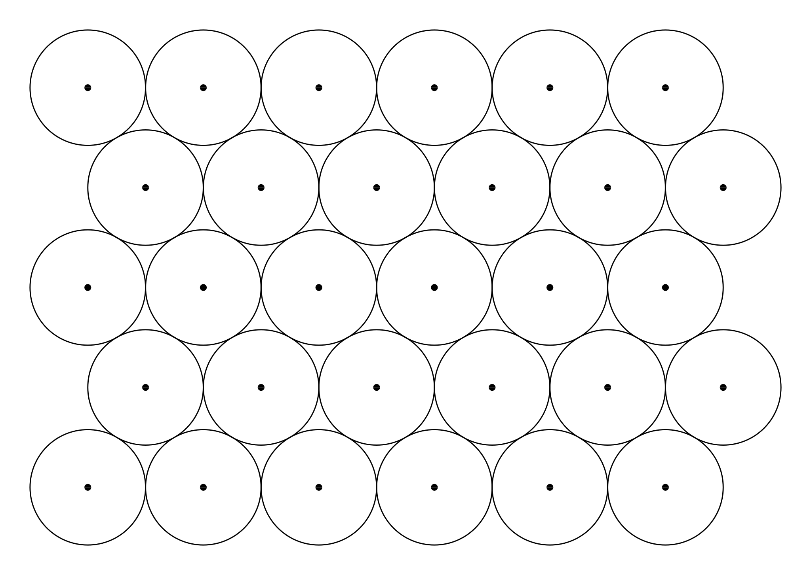
Nella parte finale della scheda mostreremo un metodo che ci permetterà di determinare la carica positiva contenuta nel nucleo; in questo modo misureremo indirettamente anche il numero di elettroni appartenenti all’atomo.In the final part of the card we will show a method that will let us determine the positive charge contained in the nucleus; in this way we will also indirectly measure the number of electrons belonging to the atom.
Prima di descrivere l’esperimento ci conviene spendere un po’ di righe per introdurre i fenomeni di radioattività e descrivere le particelle α. In futuro dedicheremo una scheda alla radioattività, quindi ora vogliamo chiarire solo il minimo indispensabile per capire l’esperimento.Before describing the experiment it is worth spending a few lines to introduce the phenomena of radioactivity and to describe the α particles. In the future we will devote a card to radioactivity, so for now we want to clarify only the bare minimum needed to understand the experiment.
Radioattività e radiazioni α.Radioactivity and α radiation.
Alcuni materiali emettono spontaneamente vari tipi di particelle ad alta energia, senza essere in alcun modo stimolati dall’esterno. Questi materiali vengono detti radioattivi ed i fasci di particelle emesse vengono chiamati radiazioni.Some materials spontaneously emit various types of high-energy particles, without being stimulated in any way from outside. These materials are called radioactive, and the beams of emitted particles are called radiations.
Le radiazioni possono essere osservate con vari tipi di rilevatori, più o meno complicati, che descriveremo nella scheda sulla radioattività. I rilevatori più sofisticati permettono di distinguere anche il tipo di particelle e di determinarne le caratteristiche fisiche.The radiations can be observed with various types of detectors, more or less complicated, which we will describe in the card on radioactivity. The most sophisticated detectors also allow the type of particles to be distinguished and their physical characteristics to be determined.
Le particelle che si usano nell’esperimento di Rutherford sono chiamate particelle α, hanno una massa praticamente pari a quella dell’atomo di elio ed hanno una carica elettrica pari al doppio di quella dell’elettrone. In sostanza una particella α è un nucleo di un atomo di elio.The particles used in Rutherford's experiment are called α particles; they have a mass practically equal to that of the helium atom and an electric charge equal to twice that of the electron. In essence, an α particle is the nucleus of a helium atom.
La velocità di emissione delle particelle α dipende dal materiale radioattivo usato, e può essere misurata con esperimenti di deflessione in campi elettrici e magnetici simili a quelli descritti nella terza scheda.The emission speed of the α particles depends on the radioactive material used, and can be measured with deflection experiments in electric and magnetic fields similar to those described in the third card.
Descrizione dell’apparato sperimentale.Description of the experimental apparatus.
La figura 2 mostra uno schema dell’apparato.Figure 2 shows a diagram of the apparatus.
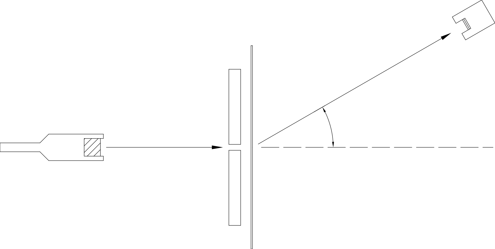
Abbiamo un preparato radioattivo chiamato Am241 che emette particelle α. Il fascio viene collimato mediante una fenditura, dopo di che incide su una sottile lamina d’oro dello spessore di 2 μm; le particelle attraversano la lamina e vengono diffuse. Infine abbiamo un rilevatore che può essere posizionato a diversi angoli ϑ e che misura la distribuzione delle particelle diffuse.We have a radioactive source called Am241 that emits α particles. The beam is collimated by a slit, after which it strikes a thin gold foil 2 μm thick; the particles cross the foil and are scattered. Finally we have a detector that can be placed at various angles ϑ and that measures the distribution of the scattered particles.
L’esperimento viene eseguito sotto vuoto (pressione <1mBar =100Pa) per permettere alle particelle α di percorrere il loro cammino senza urtare contro le molecole dell’aria.The experiment is carried out under vacuum (pressure <1 mBar = 100 Pa) to allow the α particles to travel their path without colliding with the molecules of the air.
La figura 3 è una foto del preparato radioattivo, l’Am241 è disposto sulla testa di un supporto metallico e viene conservato in un contenitore di vetro per motivi di sicurezza.Figure 3 is a photograph of the radioactive source; the Am241 is placed on the head of a metal support and is kept in a glass container for safety reasons.
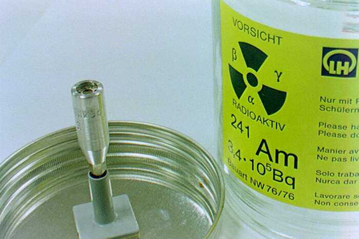
La figura 4 mostra la lamina d’oro dello spessore di 2 μm montata su un supporto di plastica, si vedono anche due fenditure di collimazione, quella dietro a sinistra è larga 1mm, mentre l’altra davanti a destra è di 5mm.Figure 4 shows the gold foil, 2 μm thick, mounted on a plastic support; two collimating slits are also visible — the one behind on the left is 1 mm wide, while the other in front on the right is 5 mm.

Il sistema di rilevazione è formato da un detector al silicio collegato ad un amplificatore di misura, la foto di figura 5 mostra il detector e l’amplificatore.The detection system consists of a silicon detector connected to a measuring amplifier; the photograph in figure 5 shows the detector and the amplifier.

Il detector è formato da un bipolo di silicio con una sua resistenza elettrica, quando la superficie sensibile viene colpita da una particella α con sufficiente energia, la resistenza elettrica si abbassa per un istante e poi risale al valore originale (fig. 6), il meccanismo di questo fenomeno sarà descritto approfonditamente in una scheda dedicata ai materiali semiconduttori quindi per ora non ce ne preoccupiamo. L’amplificatore di misura “sente” la variazione di resistenza ed amplifica il segnale generando un impulso amplificato con la stessa forma di quello ricevuto in ingresso. La foto di figura 7 mostra l’amplificatore dal lato dei morsetti di uscita, dal morsetto di sinistra si può prelevare l’impulso amplificato con la forma originale, dal morsetto di destra invece si ottiene un impulso squadrato costruito come mostra la figura 8; il livello della tensione U può essere regolato con una manopola che si trova sulla parte superiore dell’amplificatore. L’impulso squadrato viene portato ad un contatore digitale che contando il numero di impulsi conta il numero di particelle α che arrivano al detector. La figura 9 mostra una foto dell’intero apparato sperimentale, il cilindro a sinistra è la camera nella quale sono contenuti il preparato radioattivo, la lamina d’oro ed il sensore di rilevazione. La camera è collegata ad una pompa alternativa che permette di ottenere il vuoto, inoltre dalla camera parte il cavetto che collega il sensore all’amplificatore raffigurato al centro, il quale a sua volta è collegato al contatore digitale che si vede a destra. L’amplificatore è alimentato da un alimentatore a corrente continua da 10V che si vede al centro dietro l’amplificatore stesso.The detector consists of a silicon two-terminal device with its own electrical resistance; when the sensitive surface is struck by an α particle with sufficient energy, the electrical resistance drops for an instant and then returns to its original value (fig. 6). The mechanism of this phenomenon will be described in detail in a card devoted to semiconductor materials, so for now we do not worry about it. The measuring amplifier “senses” the change in resistance and amplifies the signal, generating an amplified pulse with the same shape as the one received at the input. The photograph in figure 7 shows the amplifier from the side of the output terminals: from the left terminal one can take the amplified pulse with its original shape, while from the right terminal one obtains a squared pulse built as figure 8 shows; the level of the voltage U can be adjusted with a knob located on the upper part of the amplifier. The squared pulse is fed to a digital counter which, by counting the number of pulses, counts the number of α particles that reach the detector. Figure 9 shows a photograph of the whole experimental apparatus: the cylinder on the left is the chamber containing the radioactive source, the gold foil and the detection sensor. The chamber is connected to a reciprocating pump that produces the vacuum; moreover, from the chamber runs the cable connecting the sensor to the amplifier shown in the centre, which in turn is connected to the digital counter seen on the right. The amplifier is powered by a 10 V DC power supply seen in the centre behind the amplifier.
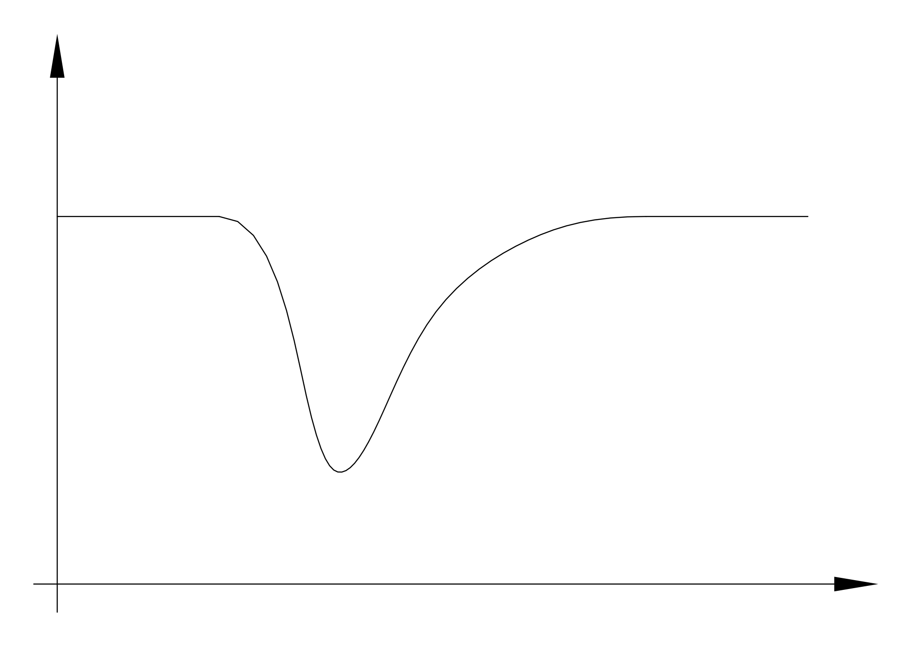
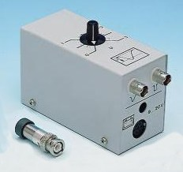
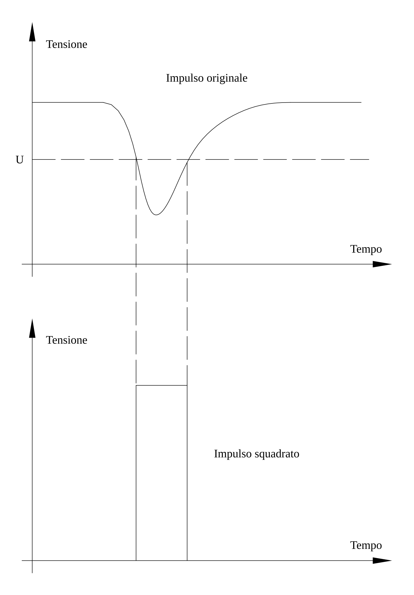

Nella foto di figura 10 si vede la camera aperta con tutti i componenti, il preparato radioattivo, il sensore e la lamina d’oro che è già montata sul suo supporto; la figura 11 mostra la camera chiusa.In the photograph in figure 10 the chamber is seen open with all its components — the radioactive source, the sensor and the gold foil already mounted on its support; figure 11 shows the chamber closed.


Nello schema iniziale (fig. 2) abbiamo visto che il preparato radioattivo e la lamina d’oro erano fissi mentre il detector poteva ruotare, invece nel nostro sistema è il contrario, il detector è fissato alla parete del cilindro, mentre la lamina d’oro ed il preparato radioattivo sono montati su un supporto rotante, ovviamente le due soluzioni sono equivalenti. Nella figura 11 la manopola a destra serve a ruotare un supporto che nel nostro esperimento non viene utilizzato, mentre la manopola al centro è quella che ci permette di ruotare il supporto del preparato radioattivo e della lamina d’oro.In the initial diagram (fig. 2) we saw that the radioactive source and the gold foil were fixed while the detector could rotate; in our system it is the opposite: the detector is fixed to the wall of the cylinder, while the gold foil and the radioactive source are mounted on a rotating support — obviously the two solutions are equivalent. In figure 11 the knob on the right serves to rotate a support that is not used in our experiment, while the knob in the centre is the one that lets us rotate the support of the radioactive source and the gold foil.
Esecuzione dell’esperimento e risultati sperimentali.Carrying out the experiment and experimental results.
Prima di tutto si deve aprire il cilindro e si devono disporre i vari elementi, il preparato radioattivo, la fenditura, la lamina d’oro ed il detector. Si può scegliere la fenditura di 1mm oppure quella di 5mm, nel primo caso si ottengono misure più precise, nel secondo si ottengono misure più veloci.First of all the cylinder must be opened and the various elements arranged — the radioactive source, the slit, the gold foil and the detector. One can choose the 1 mm slit or the 5 mm one: in the first case more precise measurements are obtained, in the second faster measurements.
Se il cilindro è sotto vuoto bisogna prima far entrare l’aria aprendo l’apposito rubinetto e poi si potrà togliere il coperchio. Se la lamina d’oro è già montata all’interno del cilindro bisogna stare attenti a non fare entrare l’aria in modo troppo brusco, altrimenti la lamina si potrebbe strappare a causa delle violente variazioni di pressione.If the cylinder is under vacuum, air must first be let in by opening the dedicated valve, and only then can the lid be removed. If the gold foil is already mounted inside the cylinder, care must be taken not to let the air in too abruptly, otherwise the foil could tear because of the violent pressure variations.
Dopo aver disposto tutti gli elementi si chiude il cilindro e si accende la pompa per circa cinque minuti, nel frattempo si collega il detector all’amplificatore e l’amplificatore al contatore digitale, inoltre si alimenta l’amplificatore con un generatore da 10V in continua.After arranging all the elements, the cylinder is closed and the pump is switched on for about five minutes; meanwhile the detector is connected to the amplifier and the amplifier to the digital counter, and the amplifier is powered with a 10 V DC generator.
Dopo aver spento la pompa si accendono il contatore e l’amplificatore, e si regola la tensione di soglia U (fig. 8) a circa 0,5V con la apposita manopola disposta sull’amplificatore.After switching off the pump, the counter and the amplifier are turned on, and the threshold voltage U (fig. 8) is set to about 0.5 V with the dedicated knob on the amplifier.
A questo punto si possono eseguire le misure. Si fissa l’angolo ϑ di rilevazione con la manopola posta sul tappo del cilindro, si azzera il contatore e si fanno partire contemporaneamente il contatore ed un cronometro tascabile. Dopo qualche minuto, quando si saranno contati un numero sufficiente di impulsi, si fermano contemporaneamente il contatore ed il cronometro; su una tabella si segnano l’angolo ϑ, il numero di impulsi contati ed il tempo di rilevazione. Si consiglia di contare almeno una ventina di impulsi per ridurre l’errore statistico.At this point the measurements can be taken. The detection angle ϑ is set with the knob on the cylinder's cap, the counter is zeroed, and the counter and a pocket stopwatch are started at the same time. After a few minutes, when a sufficient number of pulses has been counted, the counter and the stopwatch are stopped at the same time; in a table one records the angle ϑ, the number of pulses counted and the detection time. It is advisable to count at least about twenty pulses to reduce the statistical error.
La tabella qui sotto mostra una serie di misure effettuate con la fenditura da 1mm, nella quarta colonna si è riportato il numero di impulsi per unità di tempo 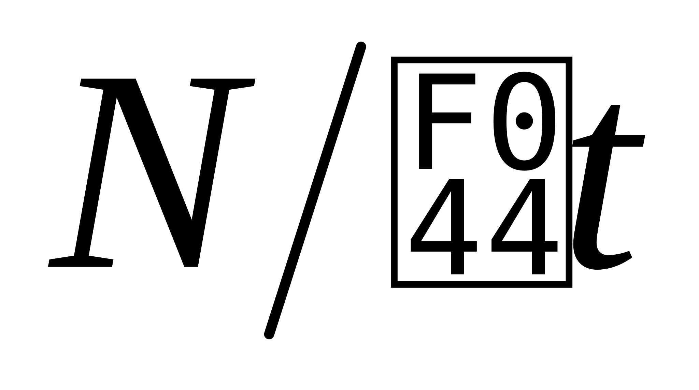 in funzione di ϑ, si osserva che la curva è spostata a sinistra di circa 1,2° il che vuol dire semplicemente che non era collimata perfettamente la direzione del fascio con lo zero del goniometro.The table below shows a series of measurements taken with the 1 mm slit; in the fourth column the number of pulses per unit time is reported. Figure 12 plots as a function of ϑ; one observes that the curve is shifted to the left by about 1.2°, which simply means that the direction of the beam was not perfectly aligned with the zero of the goniometer.
in funzione di ϑ, si osserva che la curva è spostata a sinistra di circa 1,2° il che vuol dire semplicemente che non era collimata perfettamente la direzione del fascio con lo zero del goniometro.The table below shows a series of measurements taken with the 1 mm slit; in the fourth column the number of pulses per unit time is reported. Figure 12 plots as a function of ϑ; one observes that the curve is shifted to the left by about 1.2°, which simply means that the direction of the beam was not perfectly aligned with the zero of the goniometer.
| ϑ (°) | N | Δt (s) | N/Δt (s⁻¹) |
|---|---|---|---|
| 0 | 3059 | 120 | 25,5 |
| 2,5 | 1736 | 120 | 14,5 |
| 5 | 868 | 120 | 7,23 |
| 10 | 84 | 120 | 0,7 |
| 15 | 20 | 125 | 0,16 |
| 20 | 20 | 333 | 0,06 |
| 25 | 20 | 526 | 0,038 |
| 30 | 20 | 1000 | 0,02 |
| -1,2 | 3201 | 120 | 26,7 |
| -2,5 | 3089 | 120 | 25,7 |
| -5 | 1796 | 120 | 15 |
| -7,5 | 873 | 120 | 7,27 |
| -10 | 268 | 120 | 2,23 |
| -15 | 50 | 120 | 0,417 |
| -20 | 20 | 200 | 0,1 |
| -25 | 20 | 286 | 0,0699 |
| -30 | 20 | 1053 | 0,019 |
Interpretazione dei risultati.Interpretation of the results.
Sapendo che la lamina d’oro è spessa 2 μm e sapendo che un atomo d’oro ha un diametro di circa 1 Å = 10⁻⁴ μm possiamo calcolare che la lamina è spessa circa ventimila atomi. Inoltre sappiamo che un atomo d’oro è circa cinquanta volte più pesante di una particella α.Knowing that the gold foil is 2 μm thick and that a gold atom has a diameter of about 1 Å = 10⁻⁴ μm, we can calculate that the foil is about twenty thousand atoms thick. Moreover we know that a gold atom is about fifty times heavier than an α particle.
In base a queste informazioni se supponiamo che gli atomi sono come delle sferette piene e proviamo ad immaginare l’urto tra una particella α e la lamina d’oro (Fig. 13)On the basis of this information, if we suppose that atoms are like solid little spheres and try to imagine the collision between an α particle and the gold foil (Fig. 13)
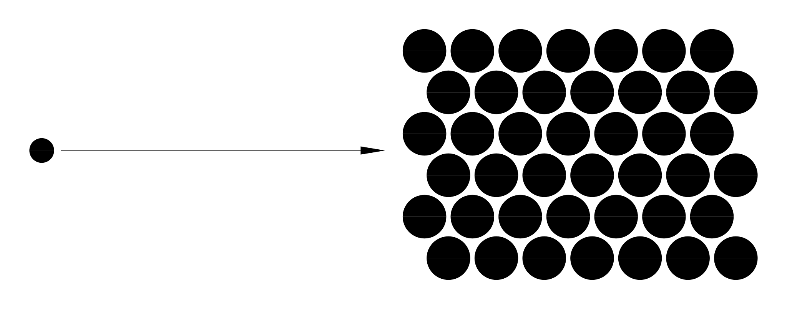
non riusciamo a capire come sia possibile che la particella attraversi la lamina. In queste condizioni la radiazione dovrebbe essere bloccata, ed invece sperimentalmente si è osservato che quasi tutte le particelle attraversano il muro con una deflessione piuttosto piccola (<10°).we cannot understand how it is possible for the particle to cross the foil. Under these conditions the radiation should be blocked, and yet experimentally it has been observed that almost all the particles cross the wall with a rather small deflection (<10°).
I risultati sperimentali si possono spiegare pensando che l’atomo sia strutturato più o meno come un piccolo sistema planetario, con un nucleo molto pesante e molto piccolo situato al centro, e con un insieme di elettroni che si muovono in uno spazio orbitale simile ad una nuvola. Nella prossima scheda studieremo un tale sistema con l’equazione di Schrödinger e mostreremo come sia possibile che si mantenga in equilibrio. Ora ci soffermiamo ad osservare come questa ipotesi sia in accordo con i risultati sperimentali.The experimental results can be explained by thinking that the atom is structured more or less like a small planetary system, with a very heavy and very small nucleus at the centre, and with a set of electrons moving in an orbital space similar to a cloud. In the next card we will study such a system with the Schrödinger equation and show how it is possible for it to remain in equilibrium. For now we pause to observe how this hypothesis agrees with the experimental results.
Prima di tutto, in base al modello atomico che abbiamo ipotizzato, possiamo capire perché la lamina d’oro è così trasparente ai raggi α (fig. 14); infatti essendo le dimensioni nucleari molto piccole, anche se ci sono ventimila nuclei in fila, è molto improbabile che si abbia un urto frontale.First of all, on the basis of the atomic model we have hypothesised, we can understand why the gold foil is so transparent to α rays (fig. 14); indeed, since the nuclear dimensions are very small, even if there are twenty thousand nuclei in a row, it is very improbable that a head-on collision occurs.
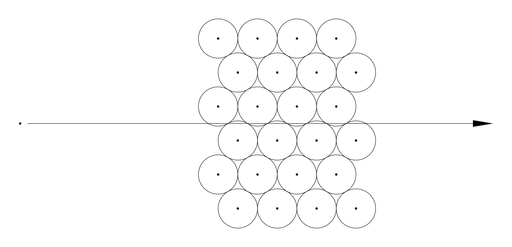
Nell’ultimo paragrafo calcoleremo la distribuzione di probabilità per l’angolo di diffusione ϑ, usando l’equazione di Schrödinger ed il modello atomico planetario, e mostreremo che è in accordo con i nostri risultati sperimentali; Prima però dobbiamo generalizzare l’equazione di Schrödinger al caso tridimensionale e dobbiamo analizzarne alcuni interessanti sviluppi di carattere teorico.In the last section we will calculate the probability distribution for the scattering angle ϑ, using the Schrödinger equation and the planetary atomic model, and we will show that it agrees with our experimental results; first, however, we must generalise the Schrödinger equation to the three-dimensional case and analyse some interesting developments of a theoretical nature.
Equazione di Schrödinger in tre dimensioni e flusso di probabilità.The Schrödinger equation in three dimensions and probability flux.
L’equazione di Schrödinger in tre dimensioni può essere ottenuta ripercorrendo esattamente gli stessi passi che abbiamo percorso per ottenere quella in una dimensione, con l’unica noia di dover usare un formalismo un po’ più pesante. Il risultato è formalmente analogo:The Schrödinger equation in three dimensions can be obtained by retracing exactly the same steps we followed to obtain the one-dimensional one, with the only nuisance of having to use a somewhat heavier formalism. The result is formally analogous:
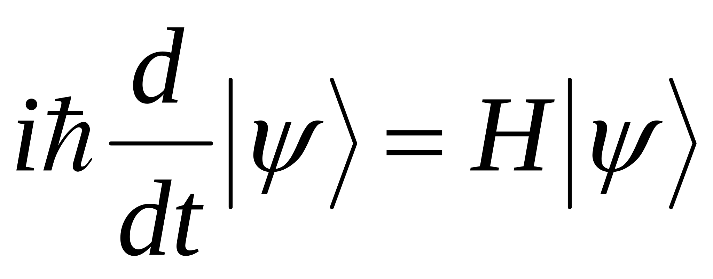
conwith
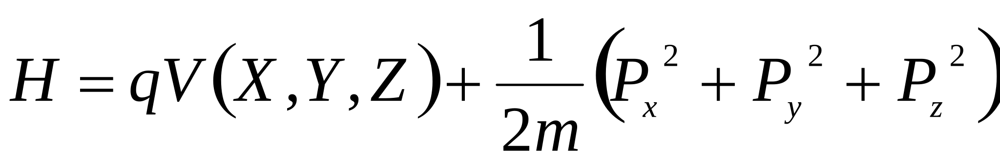
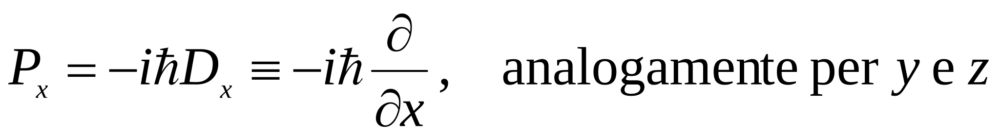
eand
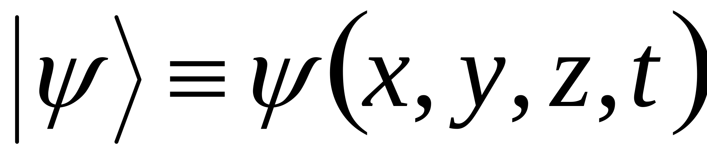
L’operatore 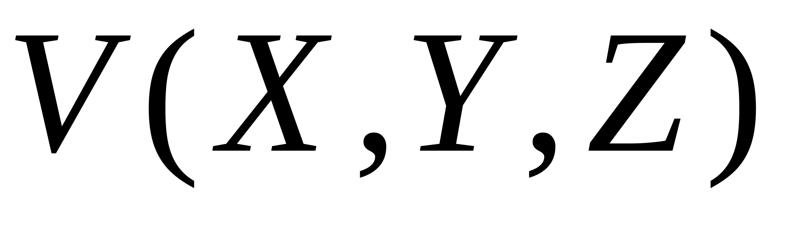 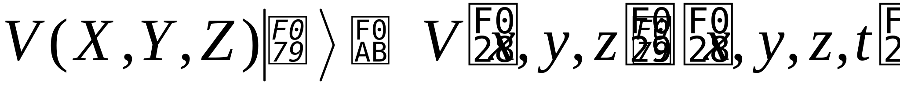
La funzione 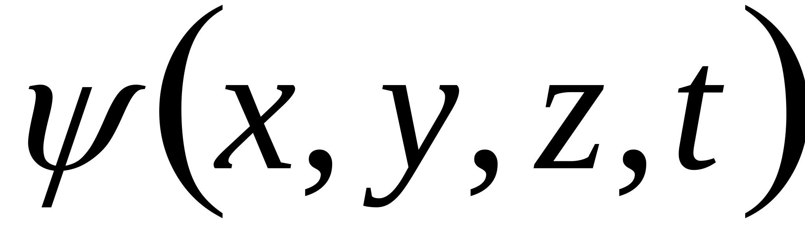 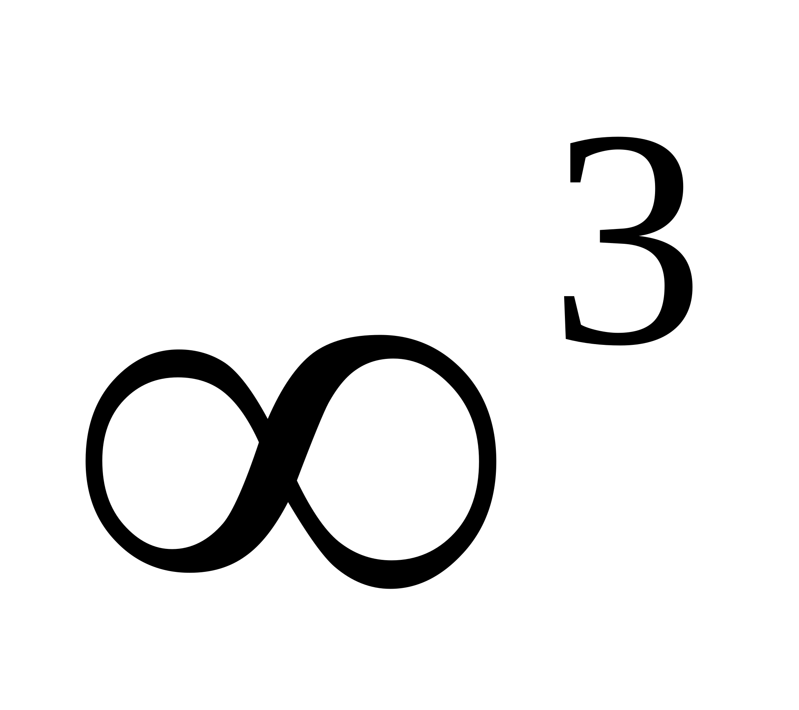 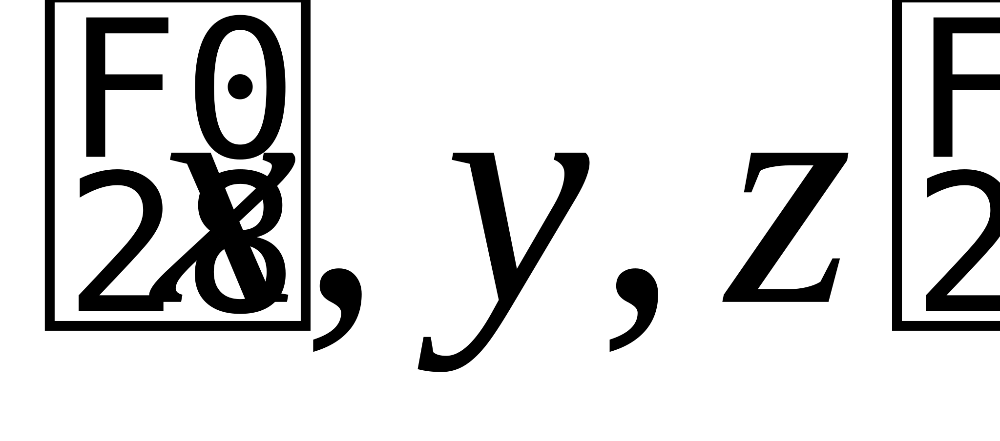 è la distribuzione di ampiezze di probabilità per la terna di variabili aleatorie is the distribution of probability amplitudes for the triple of random variables ; the dependence on time indicates that the distribution can vary with time. If we want to calculate the probability distribution we must take the squared moduli:
è la distribuzione di ampiezze di probabilità per la terna di variabili aleatorie is the distribution of probability amplitudes for the triple of random variables ; the dependence on time indicates that the distribution can vary with time. If we want to calculate the probability distribution we must take the squared moduli:
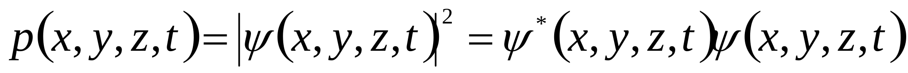
Ad esempio se consideriamo un volume Ω e vogliamo determinare la probabilità che la particella venga trovata nel volume Ω allora dobbiamo calcolare l’integrale:For example, if we consider a volume Ω and want to determine the probability that the particle is found in the volume Ω, then we must compute the integral:
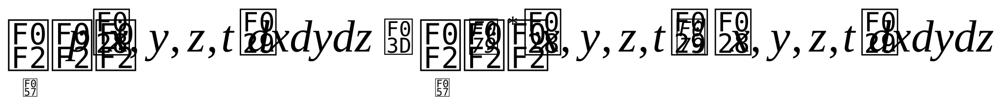
In generale quando abbiamo una distribuzione di una certa grandezza fisica, ad esempio la massa oppure la carica, abbiamo anche il vettore densità di flusso della stessa grandezza fisica, ad esempio il vettore densità di flusso di massa oppure il vettore densità di flusso di carica. Nel nostro caso abbiamo distribuzione di probabilità e ci aspettiamo che possa essere definito il vettore densità di flusso di probabilità in modo che valga un’equazione di continuità simile a quella valida per qualsiasi altra grandezza fisica:In general, when we have a distribution of a certain physical quantity — for example mass or charge — we also have the flux-density vector of that same quantity, for example the mass-flux-density vector or the charge-flux-density vector. In our case we have a probability distribution, and we expect that a probability-flux-density vector can be defined such that a continuity equation holds, similar to the one valid for any other physical quantity:
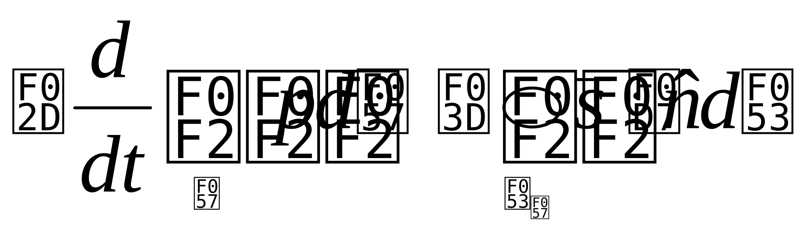
Cioè la diminuzione della probabilità contenuta in Ω è pari al flusso uscente del vettore densità di flusso di probabilità 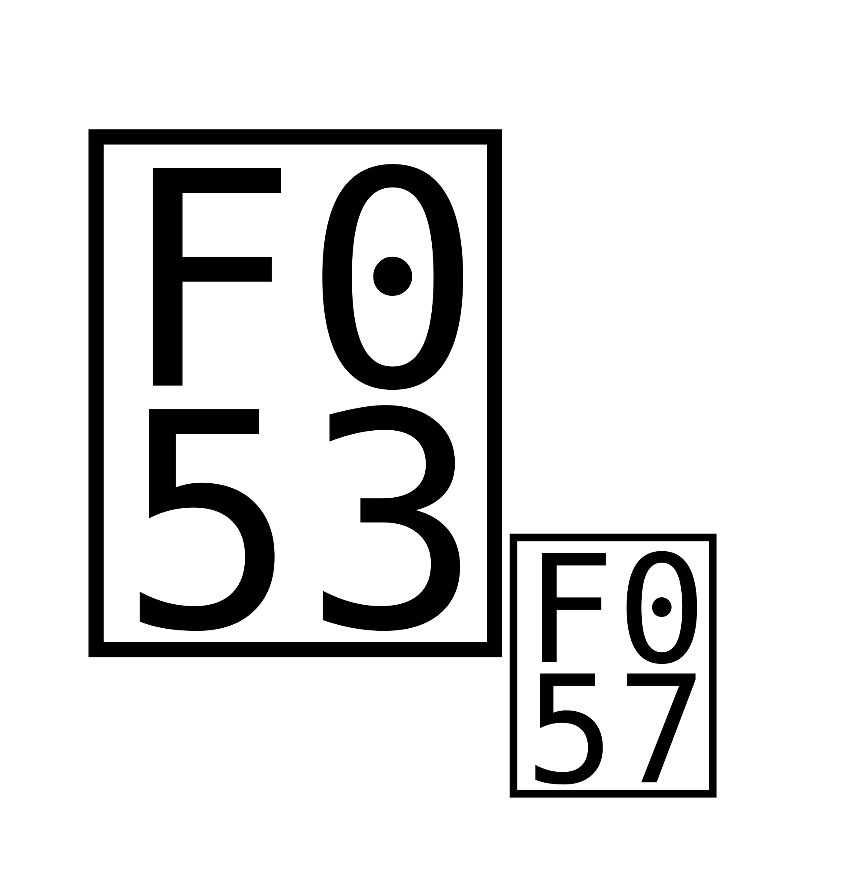 attraverso la superficie through the surface that bounds the volume Ω.
attraverso la superficie through the surface that bounds the volume Ω.
Come è noto questa equazione può essere scritta anche in forma differenziale:As is well known, this equation can also be written in differential form:
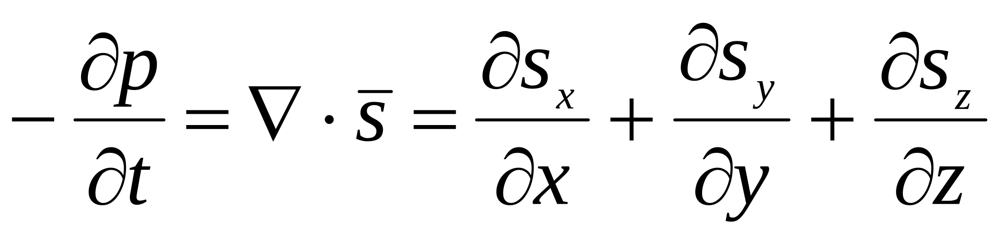
Ora in base all’equazione di Schrödinger e all’equazione di continuità cerchiamo di trovare una formula esplicita per 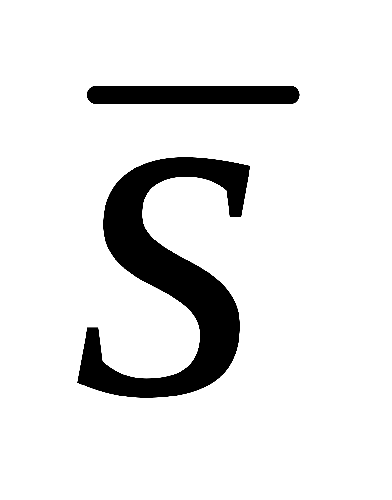
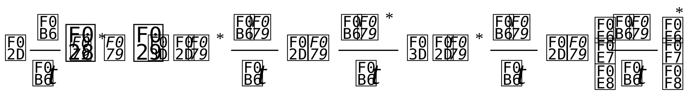
In base all’equazione di Schrödinger possiamo scrivereOn the basis of the Schrödinger equation we can write
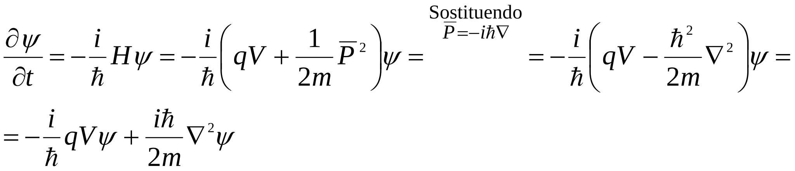
Sostituendo abbiamoSubstituting, we have
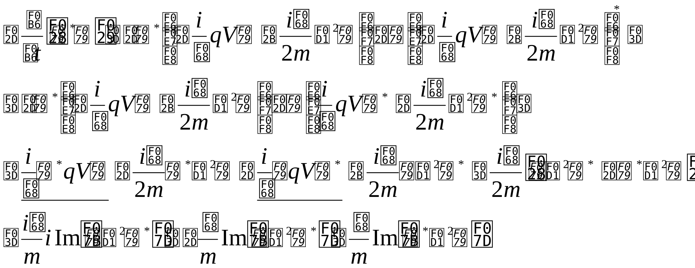
Per la regola della derivata del prodotto possiamo scrivereBy the product rule for derivatives we can write
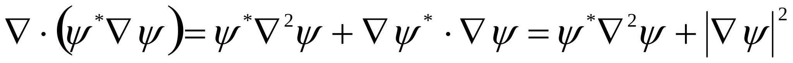
Prendendo la parte immaginaria di entrambi i membri abbiamo l’uguaglianzaTaking the imaginary part of both sides we have the equality
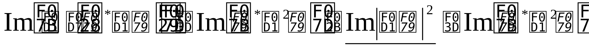
Sostituendo il termine 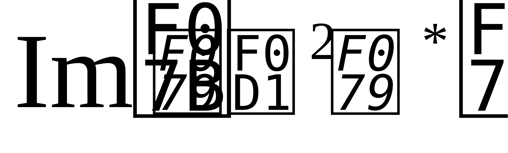 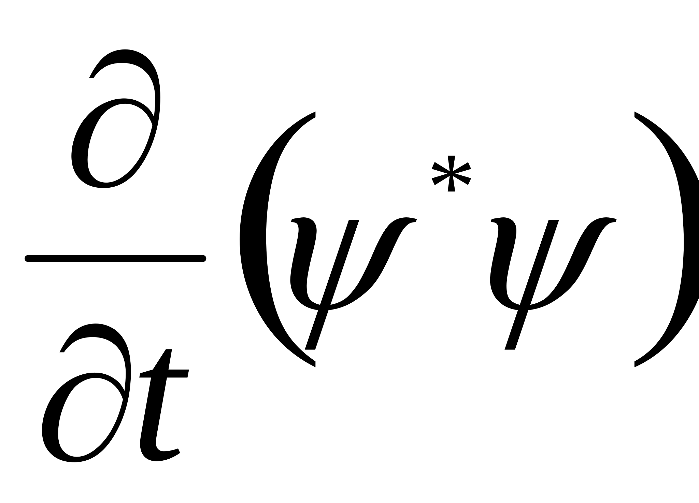
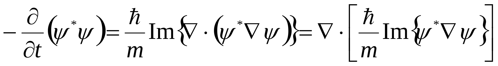
Confrontando quest’ultima con l’equazione di continuità in forma locale 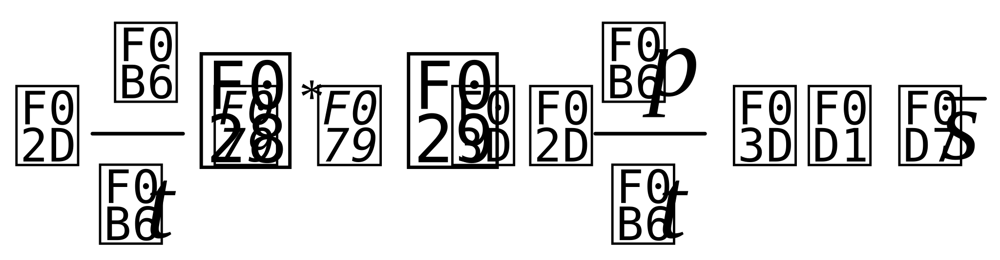 :Comparing this last one with the continuity equation in local form , we can extrapolate a possible formula for :
:Comparing this last one with the continuity equation in local form , we can extrapolate a possible formula for :
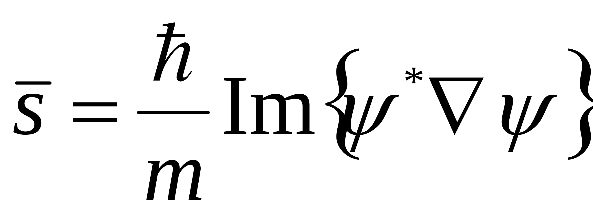
Per meglio comprendere il significato analitico di questa formula proviamo ad esprimere la funzione complessa 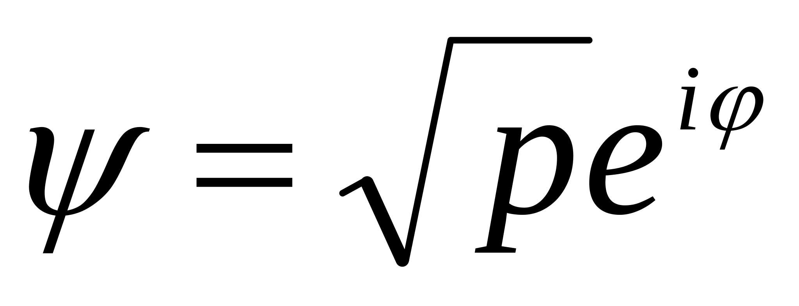 in termini di modulo e fase:
in termini di modulo e fase:  si ha:To better understand the analytical meaning of this formula, let us try to express the complex function in terms of modulus and phase: . Substituting into the formula for we have:
si ha:To better understand the analytical meaning of this formula, let us try to express the complex function in terms of modulus and phase: . Substituting into the formula for we have:
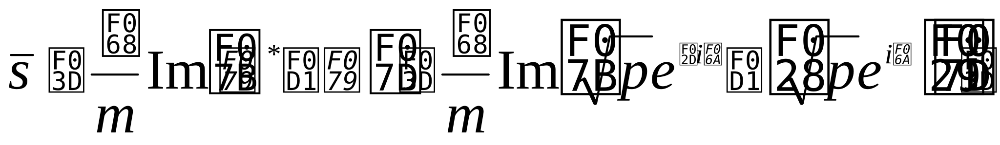
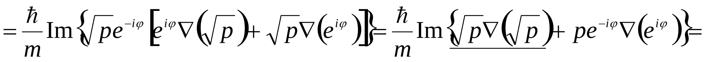
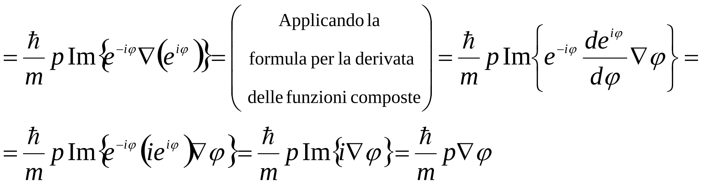
Dunque possiamo scrivereSo we can write
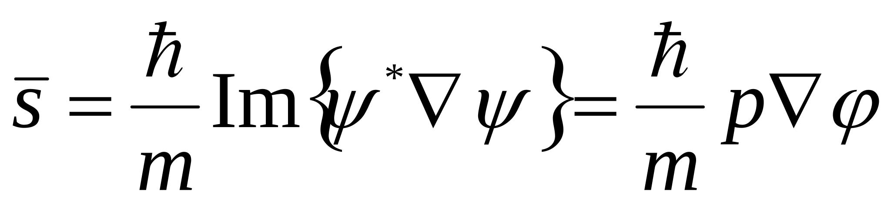
Quest’ultima formula ci mostra che, il vettore densità di flusso di probabilità in un determinato punto, è proporzionale alla densità di probabilità in questo punto e al gradiente della fase della distribuzione di ampiezze di probabilità.This last formula shows us that the probability-flux-density vector at a given point is proportional to the probability density at that point and to the gradient of the phase of the distribution of probability amplitudes.
Formula di diffusione di Rutherford.Rutherford's scattering formula.
Consideriamo una particella α che incide contro una lamina d’oro, e supponiamo di voler determinare la distribuzione di probabilità 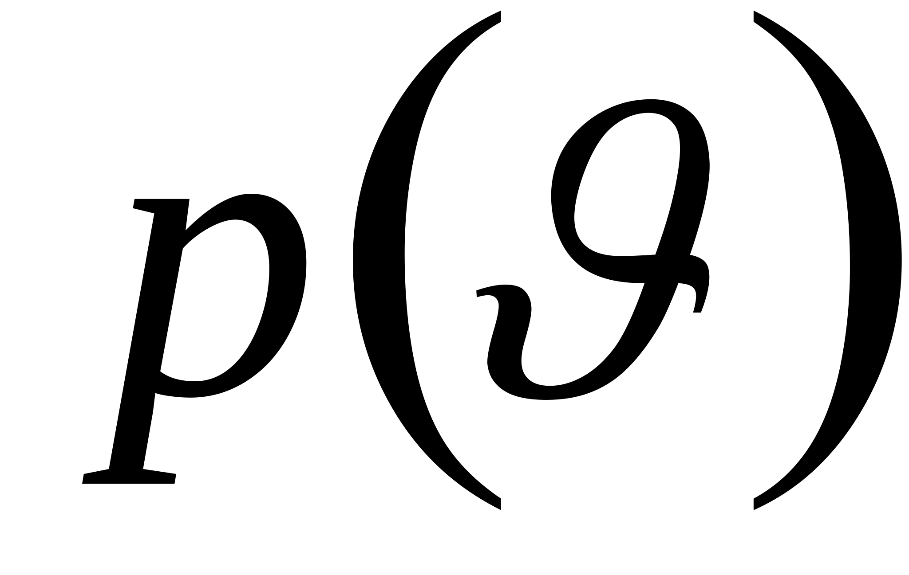
Prima di tutto osserviamo che non ci potranno essere fenomeni di diffrazione, perché la lunghezza d’onda associata ad una particella α è molto minore della distanza interatomica del reticolo cristallino dell’oro, infatti:First of all we observe that there can be no diffraction phenomena, because the wavelength associated with an α particle is much smaller than the interatomic distance of the crystal lattice of gold; indeed:
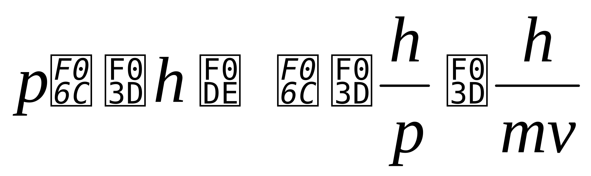
sostituendo i valori 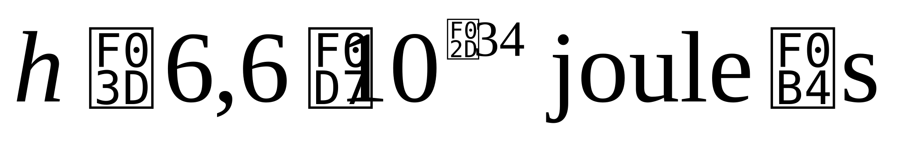 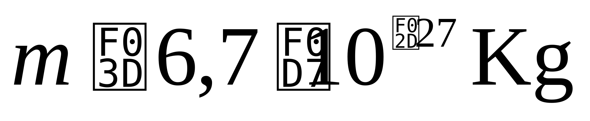 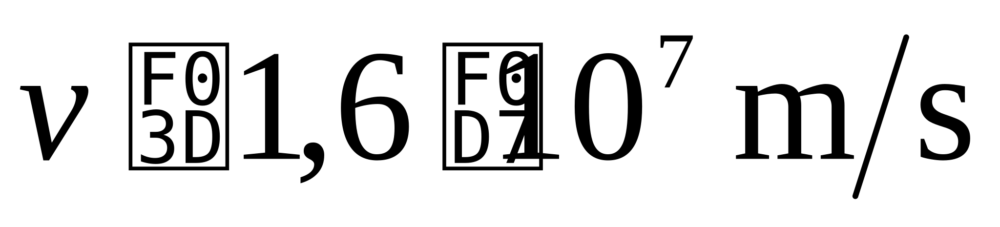
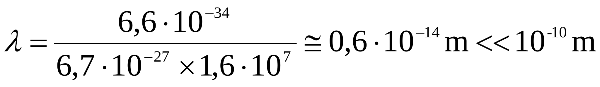
Per impostare il problema di diffusione con l’equazione di Schrödinger dovremmo specificare il “pacchetto d’onda” iniziale, cioè la distribuzione di ampiezze di probabilità iniziale 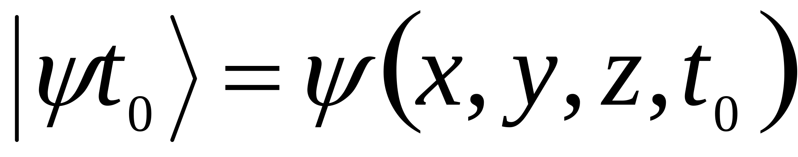 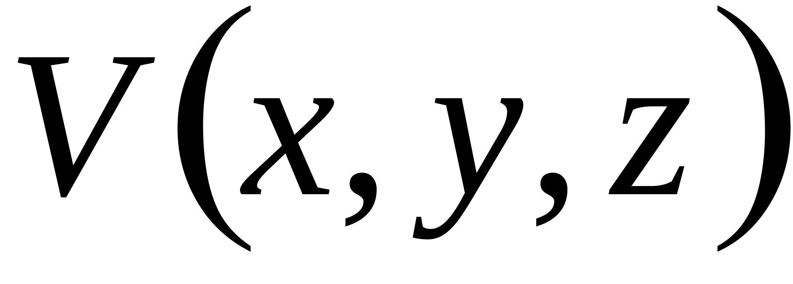
Osserviamo che già a questo punto abbiamo fatto una notevole semplificazione, infatti la lamina d’oro è un sistema complesso costituito da un aggregato di nuclei d’oro e di elettroni. Nonostante questa semplificazione il problema resta ancora molto complicato e dobbiamo trovare una strategia per raggirarlo.We note that already at this point we have made a considerable simplification; indeed the gold foil is a complex system made of an aggregate of gold nuclei and electrons. Despite this simplification the problem remains very complicated and we must find a strategy to get around it.
Sperimentalmente abbiamo visto che quasi tutte le particelle subiscono piccole deflessioni (per intenderci minori di 15°), mentre solo una piccola percentuale subisce deflessioni maggiori. Questo significa che è molto improbabile che si abbia un “urto ravvicinato”, cioè è molto improbabile che il pacchetto d’onda passi sufficientemente vicino ad un nucleo da essere deflesso di un angolo maggiore di 15°.Experimentally we saw that almost all the particles undergo small deflections (say, less than 15°), while only a small percentage undergoes larger deflections. This means that it is very improbable to have a “close collision”, that is, it is very improbable that the wave packet passes close enough to a nucleus to be deflected by an angle greater than 15°.
Possiamo concludere che, se è improbabile che ci sia un urto con un angolo di deflessione maggiore di 15°, allora è ancora più improbabile che ci siano due urti consecutivi entrambi con un angolo maggiore di 15°. Quindi possiamo supporre che le particelle deflesse sotto grandi angoli subiscono un solo urto durante l’attraversamento della lamina d’oro. Più correttamente possiamo dire che subiscono un solo urto di entità rilevante, più tanti piccoli urti con effetto medio nullo.We can conclude that, if it is improbable to have a collision with a deflection angle greater than 15°, then it is even more improbable that there are two consecutive collisions both with an angle greater than 15°. So we can assume that the particles deflected at large angles undergo a single collision while crossing the gold foil. More correctly, we can say that they undergo a single collision of significant magnitude, plus many small collisions with zero average effect.
In base alla precedente ipotesi noi studieremo la diffusione dovuta ad un solo atomo, e faremo il confronto tra i risultati teorici e quelli sperimentali solo per grandi angoli.On the basis of the previous hypothesis we will study the scattering due to a single atom, and we will compare the theoretical and experimental results only for large angles.
Per impostare il problema ci rimane da definire il pacchetto d’onda iniziale. La condizione più semplice è quella di ipotizzare che dalla direzione 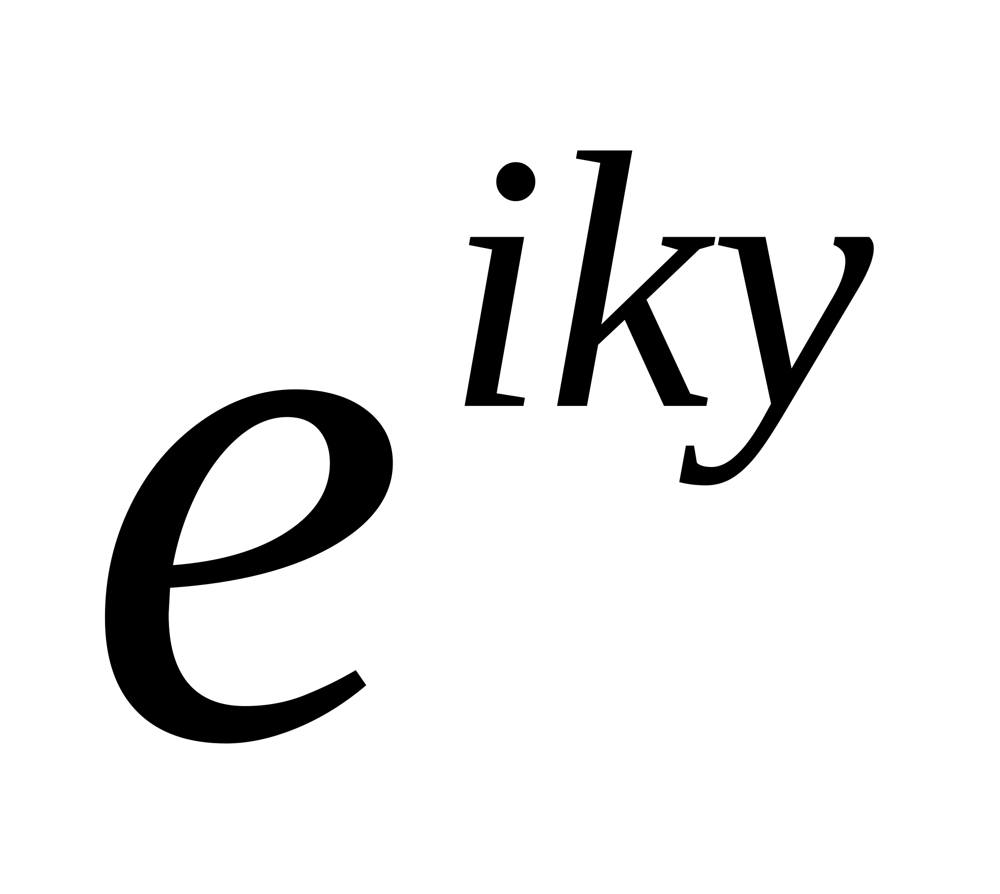 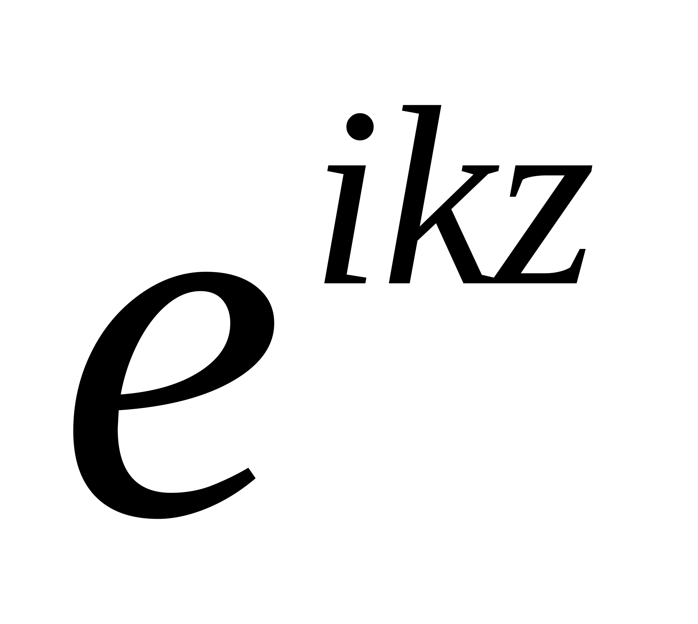 provenga un’onda piana del tipo
provenga un’onda piana del tipo  . Dopo aver determinato la soluzione in questo caso particolare, potremo usare la linearità dell’equazione di Schrödinger e costruire altre soluzioni sovrapponendo quelle già trovate. In particolare, scegliendo opportunamente la sovrapposizione, potremo ottenere la soluzione relativa a qualsiasi pacchetto iniziale, infatti il teorema di Fourier ci garantisce che qualsiasi funzione complessa può essere ottenuta come sovrapposizione di funzioni del tipo , comes from the direction . After determining the solution in this particular case, we can use the linearity of the Schrödinger equation and build other solutions by superposing those already found. In particular, by suitably choosing the superposition, we can obtain the solution for any initial packet; indeed Fourier's theorem guarantees that any complex function can be obtained as a superposition of functions of the type , and .
. Dopo aver determinato la soluzione in questo caso particolare, potremo usare la linearità dell’equazione di Schrödinger e costruire altre soluzioni sovrapponendo quelle già trovate. In particolare, scegliendo opportunamente la sovrapposizione, potremo ottenere la soluzione relativa a qualsiasi pacchetto iniziale, infatti il teorema di Fourier ci garantisce che qualsiasi funzione complessa può essere ottenuta come sovrapposizione di funzioni del tipo , comes from the direction . After determining the solution in this particular case, we can use the linearity of the Schrödinger equation and build other solutions by superposing those already found. In particular, by suitably choosing the superposition, we can obtain the solution for any initial packet; indeed Fourier's theorem guarantees that any complex function can be obtained as a superposition of functions of the type , and .
Ora passiamo a fare i conti:Now let us do the calculations:
Dobbiamo risolvere l’equazione di Schrödinger con la condizione cheWe must solve the Schrödinger equation with the condition that
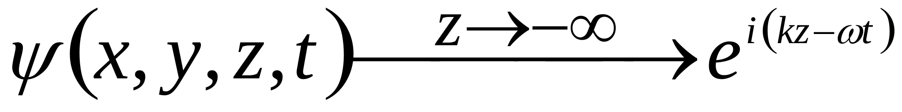
Prima di tutto osserviamo che deve essere perché la funzione deve soddisfare l’equazione di Schrödinger nello spazio  dove First of all we observe that it must be because the function must satisfy the Schrödinger equation in the space where
dove First of all we observe that it must be because the function must satisfy the Schrödinger equation in the space where
Ora, per risolvere il nostro problema, proviamo a separare le variabili spazio dalle variabili tempo con funzioni del tipo ; sostituendo nell’equazione di Schrödinger abbiamo:Now, to solve our problem, let us try to separate the space variables from the time variables with functions of the type ; substituting into the Schrödinger equation we have:
Dunque dobbiamo risolvere il problema:So we must solve the problem:
L’equazione di questo problema non può essere risolta in forma analitica, quindi troveremo una soluzione approssimata usando un metodo di tipo iterativo.The equation of this problem cannot be solved in analytical form, so we will find an approximate solution using an iterative method.
Prima scegliamo una funzione che approssimi bene l’equazione e la condizione al contorno. Poi sostituiamo questa funzione al secondo membro dell’equazione e risolviamo rispetto all’incognita che è rimasta al primo membro:First we choose a function that approximates the equation and the boundary condition well. Then we substitute this function into the right-hand side of the equation and solve for the unknown that has remained on the left-hand side:
In questo modo troviamo una prima soluzione , per procedere sostituiamo  al secondo membro e troviamo una seconda soluzione . Si procede iterando questa operazione fino a raggiungere una approssimazione soddisfacente.In this way we find a first solution ; to proceed we substitute into the right-hand side and find a second solution . One proceeds by iterating this operation until a satisfactory approximation is reached.
al secondo membro e troviamo una seconda soluzione . Si procede iterando questa operazione fino a raggiungere una approssimazione soddisfacente.In this way we find a first solution ; to proceed we substitute into the right-hand side and find a second solution . One proceeds by iterating this operation until a satisfactory approximation is reached.
In realtà noi eseguiamo solo un passo e come funzione iniziale scegliamo . Quindi abbiamo:Actually we perform only one step and as the initial function we choose . So we have:
La soluzione generale di questo problema è (vedi appendice 1):The general solution of this problem is (see appendix 1):
Il termine si annulla lontano dal nucleo, quindi è come se l’integrale fosse esteso ad un intorno limitato; invece i punti  in cui ci interessa determinare la soluzione sono molto lontani dall’atomo, quindi possiamo dire che sarà . In base a queste considerazioni possiamo approssimare il termine . Per il denominatore possiamo scrivere ; mentre per l’argomento dell’esponenziale possiamo scrivere (fig. 15).The term vanishes far from the nucleus, so it is as if the integral were extended to a limited neighbourhood; on the other hand, the points at which we are interested in determining the solution are very far from the atom, so we can say that . On the basis of these considerations we can approximate the term . For the denominator we can write ; while for the argument of the exponential we can write (fig. 15).
in cui ci interessa determinare la soluzione sono molto lontani dall’atomo, quindi possiamo dire che sarà . In base a queste considerazioni possiamo approssimare il termine . Per il denominatore possiamo scrivere ; mentre per l’argomento dell’esponenziale possiamo scrivere (fig. 15).The term vanishes far from the nucleus, so it is as if the integral were extended to a limited neighbourhood; on the other hand, the points at which we are interested in determining the solution are very far from the atom, so we can say that . On the basis of these considerations we can approximate the term . For the denominator we can write ; while for the argument of the exponential we can write (fig. 15).
Inoltre possiamo scrivere .Moreover we can write .
Sostituendo queste espressioni abbiamo:Substituting these expressions we have:
Per calcolare l’integrale dobbiamo scegliere un sistema di coordinate; la scelta più intelligente è un sistema di coordinate polari , con l’asse nella direzione . Infatti in questo modo abbiamo , ed essendo possiamo scrivere l’integrale nella forma:To compute the integral we must choose a coordinate system; the most sensible choice is a polar coordinate system , with the axis in the direction . Indeed, in this way we have , and since we can write the integral in the form:
L’integrando non contiene la variabile β, quindi l’integrazione rispetto a β è banale e da un termine 2π. L’integrazione rispetto ad α si esegue per sostituzione ponendo , in questo modo abbiamo:The integrand does not contain the variable β, so the integration with respect to β is trivial and gives a term 2π. The integration with respect to α is done by substitution, setting ; in this way we have:
A questo punto per completare il calcolo dell’integrale dobbiamo introdurre il potenziale  . Potremmo inserire dove è la carica del nucleo, ma in questo modo otteniamo un integrale “oscillante” che non può essere calcolato; questo problema si verifica perché ci siamo messi in una situazione ideale quando abbiamo considerato come pacchetto incidente un’onda piana. Tuttavia questa difficoltà si supera facilmente se si considera ; in questa formula l’esponenziale rappresenta l’effetto schermante dovuto alla carica degli elettroni, ed a è il raggio della “nuvola elettronica”. In realtà l’effetto schermante dovrebbe essere determinato con dei calcoli precisi, ma comunque l’approssimazione esponenziale è molto buona, ed inoltre il risultato non cambia molto se scegliamo altre forme.At this point, to complete the calculation of the integral, we must introduce the potential . We could insert , where is the charge of the nucleus, but in this way we obtain an “oscillating” integral that cannot be computed; this problem arises because we placed ourselves in an ideal situation when we considered a plane wave as the incident packet. However, this difficulty is easily overcome if one considers ; in this formula the exponential represents the screening effect due to the charge of the electrons, and a is the radius of the “electron cloud”. Actually the screening effect should be determined with precise calculations, but in any case the exponential approximation is very good, and moreover the result does not change much if we choose other forms.
. Potremmo inserire dove è la carica del nucleo, ma in questo modo otteniamo un integrale “oscillante” che non può essere calcolato; questo problema si verifica perché ci siamo messi in una situazione ideale quando abbiamo considerato come pacchetto incidente un’onda piana. Tuttavia questa difficoltà si supera facilmente se si considera ; in questa formula l’esponenziale rappresenta l’effetto schermante dovuto alla carica degli elettroni, ed a è il raggio della “nuvola elettronica”. In realtà l’effetto schermante dovrebbe essere determinato con dei calcoli precisi, ma comunque l’approssimazione esponenziale è molto buona, ed inoltre il risultato non cambia molto se scegliamo altre forme.At this point, to complete the calculation of the integral, we must introduce the potential . We could insert , where is the charge of the nucleus, but in this way we obtain an “oscillating” integral that cannot be computed; this problem arises because we placed ourselves in an ideal situation when we considered a plane wave as the incident packet. However, this difficulty is easily overcome if one considers ; in this formula the exponential represents the screening effect due to the charge of the electrons, and a is the radius of the “electron cloud”. Actually the screening effect should be determined with precise calculations, but in any case the exponential approximation is very good, and moreover the result does not change much if we choose other forms.
Sostituendo la formula per il potenziale abbiamo:Substituting the formula for the potential we have:
Essendo possiamo trascurare il termine al denominatore ed otteniamo per l’integrale la formula:Since we can neglect the term in the denominator and obtain for the integral the formula:
Sostituendo nella formula per  abbiamo:Substituting into the formula for we have:
abbiamo:Substituting into the formula for we have:
A questo punto abbiamo determinato la distribuzione di ampiezze di probabilità, ora dobbiamo interpretarla e calcolare il flusso di probabilità.At this point we have determined the distribution of probability amplitudes; now we must interpret it and calculate the probability flux.
In origine avevamo un’onda piana che proveniva dalla direzione , il risultato, come mostra la figura 16, è un’onda piana che va verso più un’onda sferica divergente che ha un’ampiezza che dipende dall’angolo ϑ.Originally we had a plane wave coming from the direction ; the result, as figure 16 shows, is a plane wave going towards plus a diverging spherical wave whose amplitude depends on the angle ϑ.
Nella realtà fisica non avremo un’onda piana infinitamente estesa, ma, come mostra la figura 17, avremo un fascio stretto, molto simile ad un’onda piana, ma con una dimensione trasversale finita.In physical reality we will not have an infinitely extended plane wave but, as figure 17 shows, a narrow beam, very similar to a plane wave, but with a finite transverse size.
In queste condizioni solo l’onda sferica potrà arrivare al detector, quindi è solo l’onda sferica che dobbiamo considerare per calcolare il flusso di probabilità.Under these conditions only the spherical wave can reach the detector, so it is only the spherical wave that we must consider to calculate the probability flux.
Ora passiamo al calcolo del flusso mediante la formula . La fase φ è quella che si trova nel termine ed è , dunque abbiamo .Now we move on to the calculation of the flux by means of the formula . The phase φ is the one found in the term and is , so we have .
Sostituendo nella formula per i vari termini abbiamo per il modulo del vettore densità di flusso diffuso:Substituting the various terms into the formula, we obtain for the modulus of the scattered flux-density vector:
Per la densità di flusso incidente dovuto all’onda  abbiamo:For the incident flux density due to the wave we have:
abbiamo:For the incident flux density due to the wave we have:
La densità di flusso diffuso per una densità di flusso incidente unitaria è data dal rapporto:The scattered flux density for a unit incident flux density is given by the ratio:
Se moltiplichiamo questo termine per una superficie dS otteniamo il flusso attraverso dS. Se vogliamo calcolare il flusso associato ad un angolo solido dΩ dobbiamo considerare la superficie sottesa dall’angolo dΩ che è . Dunque il flusso entrante in dΩ è:If we multiply this term by a surface dS we obtain the flux through dS. If we want to calculate the flux associated with a solid angle dΩ we must consider the surface subtended by the angle dΩ, which is . So the flux entering dΩ is:
Se sostituiamo otteniamo la formula di diffusione di Rutherford:If we substitute we obtain Rutherford's scattering formula:
Questa formula ci dà la densità di flusso diffuso per angolo solido, da un singolo atomo, quando il flusso incidente ha densità unitaria.This formula gives us the scattered flux density per solid angle, from a single atom, when the incident flux has unit density.
Confronto tra teoria ed esperienza.Comparison between theory and experiment.
Prima di tutto osserviamo che la formula di Rutherford è divergente per , quindi per angoli piccoli non si può avere nessun accordo sperimentale; questo lo aspettavamo perché abbiamo fatto delle approssimazioni valide solo per angoli abbastanza grandi.First of all we observe that Rutherford's formula diverges for , so for small angles there can be no experimental agreement; we expected this because we made approximations valid only for fairly large angles.
Per quanto riguarda la dipendenza da le figure 18 e 19 riportano il confronto tra i valori ottenuti sperimentalmente ed i valori calcolati con la formula opportunamente scalata; la figura 18 è in scala lineare, mentre la figura 19 è in scala logaritmica; i cerchi rappresentano i punti misurati ed i triangoli rappresentano i punti calcolati.As for the dependence on , figures 18 and 19 report the comparison between the values obtained experimentally and those calculated with the suitably scaled formula; figure 18 is on a linear scale, while figure 19 is on a logarithmic scale; the circles represent the measured points and the triangles represent the calculated points.
Come si vede c’è accordo per angoli maggiori di 10°.As can be seen, there is agreement for angles greater than 10°.
Ora vedremo come si può determinare la carica nucleare applicando la formula di Rutherford completa  .Now we will see how the nuclear charge can be determined by applying the complete Rutherford formula .
.Now we will see how the nuclear charge can be determined by applying the complete Rutherford formula .
Come abbiamo già detto questa formula ci dà la distribuzione del flusso di probabilità, diffuso da un solo atomo e per una densità di flusso incidente unitaria. Per applicarla al nostro caso dobbiamo prima moltiplicarla per la densità di flusso effettiva, e poi moltiplicarla per il numero effettivo di atomi che contribuiscono al processo di diffusione:As we have already said, this formula gives us the distribution of the probability flux, scattered by a single atom and for a unit incident flux density. To apply it to our case we must first multiply it by the actual flux density, and then multiply it by the actual number of atoms that contribute to the scattering process:
Per ottenere il numero di atomi diffusori dobbiamo considerare il volume d’oro investito dal fascio e moltiplicarlo per n il numero di atomi per unità di volume. Il volume d’oro investito dal fascio si può calcolare moltiplicando la sezione trasversale del fascio per lo spessore s della lamina d’oro quindi abbiamo:To obtain the number of scattering atoms we must consider the volume of gold struck by the beam and multiply it by n, the number of atoms per unit volume. The volume of gold struck by the beam can be calculated by multiplying the cross-section of the beam by the thickness s of the gold foil, so we have:
Il prodotto della densità del flusso per la sezione del fascio ci dà il flusso incidente totale che indicheremo con F, quindi abbiamo:The product of the flux density and the beam cross-section gives us the total incident flux, which we will denote by F, so we have:
Questa formula ci dà il flusso di probabilità per angolo solido. Se vogliamo calcolare il flusso di particelle, dobbiamo considerare che il passaggio di una particella equivale al passaggio di una “unità di probabilità”, cioè quando un’unità di probabilità si trasferisce da un luogo ad un altro vuol dire che una particella si è trasferita tra questi due luoghi; quindi la formula che ci dà il flusso di probabilità ci dà anche il flusso di particelle senza dover essere corretta.This formula gives us the probability flux per solid angle. If we want to calculate the flux of particles, we must consider that the passage of a particle is equivalent to the passage of a “unit of probability”, that is, when a unit of probability moves from one place to another it means that a particle has moved between these two places; so the formula that gives us the probability flux also gives us the flux of particles without needing to be corrected.
Se supponiamo che il detector sottende un angolo solido dΩ, allora possiamo calcolare il numero di particelle per unità di tempo che vengono rilevate:If we assume that the detector subtends a solid angle dΩ, then we can calculate the number of particles per unit time that are detected:
Per poter applicare questa formula ci resta da determinare il flusso totale incidente F. Per determinare questa grandezza dobbiamo calcolare l’integrale della distribuzione ottenuta sperimentalmente. L’integrale deve essere calcolato considerando che la curva in realtà rappresenta una superficie, che si ottiene facendo ruotare la curva attorno all’asse delle ordinate; quindi non abbiamo un integrale semplice, ma un integrale doppio. Tuttavia per ottenere una stima grossolana noi faremo il calcolo basandoci sull’approssimazione mostrata in figura 20, cioè approssimeremo la superficie con un cilindro, con un raggio di base di 10° ed un’altezza pari all’altezza massima della superficie, 27 particelle al secondo nell’angolo solido dΩ.To be able to apply this formula it remains to determine the total incident flux F. To determine this quantity we must compute the integral of the distribution obtained experimentally. The integral must be computed taking into account that the curve actually represents a surface, obtained by rotating the curve about the ordinate axis; so we do not have a simple integral, but a double integral. However, to obtain a rough estimate we will do the calculation based on the approximation shown in figure 20, that is, we will approximate the surface with a cylinder of base radius 10° and height equal to the maximum height of the surface, 27 particles per second in the solid angle dΩ.
Quindi per il flusso totale abbiamo:So for the total flux we have:
Per l’angolo solido totale abbiamo (Fig. 21):For the total solid angle we have (Fig. 21):
quindi:so:
Sostituendo questo valore di F nella formula per il numero di particelle rilevate per unità di tempo abbiamo:Substituting this value of F into the formula for the number of particles detected per unit time we have:
Per n, il numero di atomi per unità di volume, possiamo fare una stima considerando che un atomo ha un raggio di circa 1 Å (), quindi occupa un volume di circa ; dunque abbiamo .For n, the number of atoms per unit volume, we can make an estimate considering that an atom has a radius of about 1 Å (), so it occupies a volume of about ; thus we have .
Sostituendo nella formula i seguenti valori:Substituting the following values into the formula:
abbiamo:we have:
A questo punto dobbiamo trovare la carica Q che fa coincidere questa distribuzione teorica con la distribuzione sperimentale; per abbiamo il confronto rappresentato in figura 22.At this point we must find the charge Q that makes this theoretical distribution coincide with the experimental distribution; for we have the comparison shown in figure 22.
Quindi la nostra stima per la carica del nucleo dell’oro è di  , corrispondenti a elettroni.So our estimate for the charge of the gold nucleus is , corresponding to electrons.
, corrispondenti a elettroni.So our estimate for the charge of the gold nucleus is , corresponding to electrons.
Misure più precise portano ad una carica pari a 79 volte quella dell’elettrone.More precise measurements lead to a charge equal to 79 times that of the electron.
Noi non abbiamo voluto eseguire una misura molto precisa, il nostro scopo era solo quello di mostrare come è possibile determinare la carica nucleare ed il numero di elettroni contenuti in un atomo.We did not want to carry out a very precise measurement; our aim was only to show how it is possible to determine the nuclear charge and the number of electrons contained in an atom.
Appendice 1. Equazione di Helmholtz.Appendix 1. The Helmholtz equation.
L’equazione che abbiamo incontrato nel testo era del tipo:The equation we encountered in the text was of the type:
con la condizione che per .with the condition that for .
Per risolvere questo problema consideriamo prima l’equazione omogenea con la condizione al contorno effettiva:To solve this problem we first consider the homogeneous equation with the actual boundary condition:
Ora risolviamo l’equazione completa con la condizione al contorno “nulla”: Now we solve the complete equation with the “null” boundary condition:
Determiniamo la soluzione quando il termine noto è la funzione di Dirac:We determine the solution when the source term is the Dirac function:
In questo caso la soluzione come verificheremo più avanti èIn this case the solution, as we will verify later, is
Utilizzando la linearità dell’equazione, dal fatto che:Using the linearity of the equation, from the fact that:
possiamo concludere che:we can conclude that:
Sommando questa soluzione a quella trovata per l’equazione omogenea con la condizione iniziale effettiva abbiamo la formula applicata nel testo:Adding this solution to the one found for the homogeneous equation with the actual initial condition, we obtain the formula applied in the text:
Ora verifichiamo che la funzione soddisfa l’equazione . Eseguiremo la verifica in due passi:Now we verify that the function satisfies the equation . We will carry out the verification in two steps:
Prima proviamo che l’equazione è soddisfatta per ogni :First we prove that the equation is satisfied for every :
per  si ha , quindi dobbiamo verificare che . Per scrivere il laplaciano conviene scegliere un sistema di coordinate sferiche centrate in , in questo modo abbiamo:for we have , so we must verify that . To write the Laplacian it is convenient to choose a system of spherical coordinates centred at ; in this way we have:
si ha , quindi dobbiamo verificare che . Per scrivere il laplaciano conviene scegliere un sistema di coordinate sferiche centrate in , in questo modo abbiamo:for we have , so we must verify that . To write the Laplacian it is convenient to choose a system of spherical coordinates centred at ; in this way we have:
sostituendo la formula per il laplaciano e semplificando i termini comunisubstituting the formula for the Laplacian and simplifying the common terms
Come secondo punto proviamo che vale la proprietà della funzione di Dirac:As a second point we prove that the property of the Dirac function holds:
Sostituendo  abbiamoSubstituting we have
abbiamoSubstituting we have
scegliendo un sistema di coordinate sferiche centrato in abbiamochoosing a system of spherical coordinates centred at we have
applicando il teorema della divergenza abbiamoapplying the divergence theorem we have
Eseguiamo prima l’integrale di superficie per una sfera di raggio RWe first carry out the surface integral for a sphere of radius R
Ora eseguiamo l’integrale di volume per la stessa sfera di raggio RNow we carry out the volume integral for the same sphere of radius R
integrando per parti abbiamointegrating by parts we have
Sommando i risultati dei due integrali abbiamoAdding the results of the two integrals we have
Come volevasi dimostrare.As was to be shown.
Appendice 2.Appendix 2.
Nel testo abbiamo un integrale del tipo:In the text we have an integral of the type:
Indichiamo l’integrale con il simbolo I. Integreremo due volte per parti ottenendo così un’equazione nell’incognita I:We denote the integral by the symbol I. We will integrate by parts twice, thus obtaining an equation in the unknown I:
Dunque abbiamo l’equazioneSo we have the equation
Questa è la formula applicata nel testo.This is the formula applied in the text.